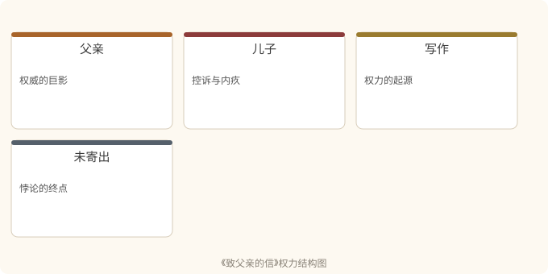

致父亲的信
一、基本信息
| 作者 | 卡夫卡 |
|---|---|
| 成书/出版 | 1919年写成（作者页 B049 口径：致父亲的信（1919）） Franz Kafka — Encyclopaedia Britannica（百科全书） |
| 国别/地区 | 奥地利 |
| 时代 | 近代 · 20世纪初 |
| 体裁 | 书信 |
| 语言 | 德语 |

《致父亲的信》权力结构图（主题·结构图）
二、创作背景
作者页（B049）：卡夫卡 major_works 载'致父亲的信（1919）'（B049 作者页定位，详见 bianxingji 条核对）。
文体（通说）：四十五页长信——控诉与自我控诉的双向书写；母亲转交未遂（通说待核）。
三、内容脉络
'你最近问过我……'：父子关系的全面清算（开篇句通说待核）。
权力、羞耻与写作的起源（通说待核）。
四、主要人物表
| 人物 | 身份 | 说明 |
|---|---|---|
| 卡夫卡 | 儿子 | 控诉者与被控者 |
| 赫尔曼·卡夫卡 | 父亲 | 权威的化身（通说待核） |
五、主题与艺术特点
- 父权与写作（通说）。
- 羞耻的体系（通说待核）。
- 信未寄达的悖论（通说待核）。
六、影响与评论
- 作者页：卡夫卡书信代表作（B049 作者页口径）。
Franz Kafka — Encyclopaedia Britannica（百科全书） - 《变形记》《审判》的心理学钥匙（通说待核）。
Franz Kafka — Encyclopaedia Britannica（百科全书）
七、阅读建议
难点
- 长信的心理回环。
- 德语原文的语调。
- 《致父亲的信》（人民文学出版社/上海译文出版社版本，通说待核）。
- 德文原版（公有领域渐近）。
对照《变形记》读：同一父子的两个文本。
八、待核实
- 1919年11月写成、未寄出说核对。
- 开篇句原文核对。
- 母亲转交情节待核。
本页主要来源
卡夫卡的其他收录作品：变形记